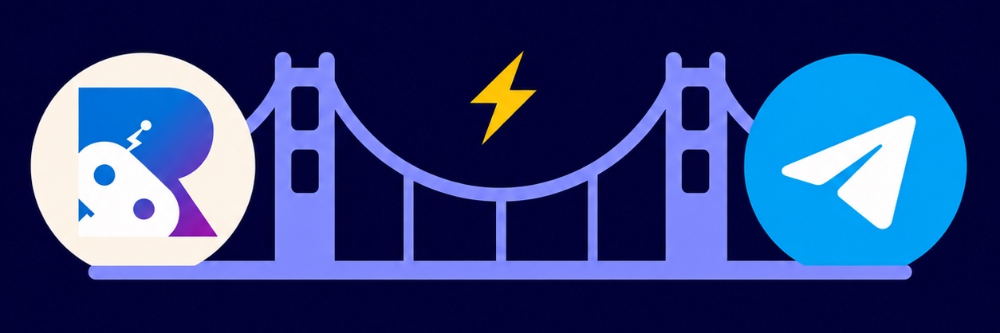
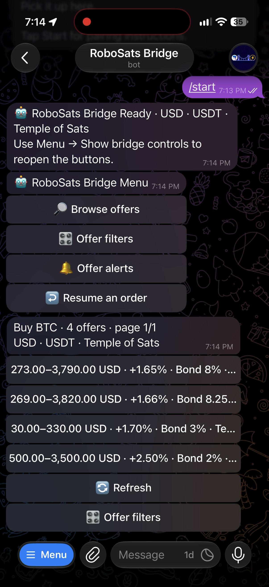
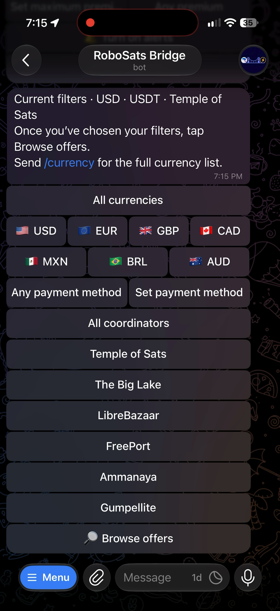
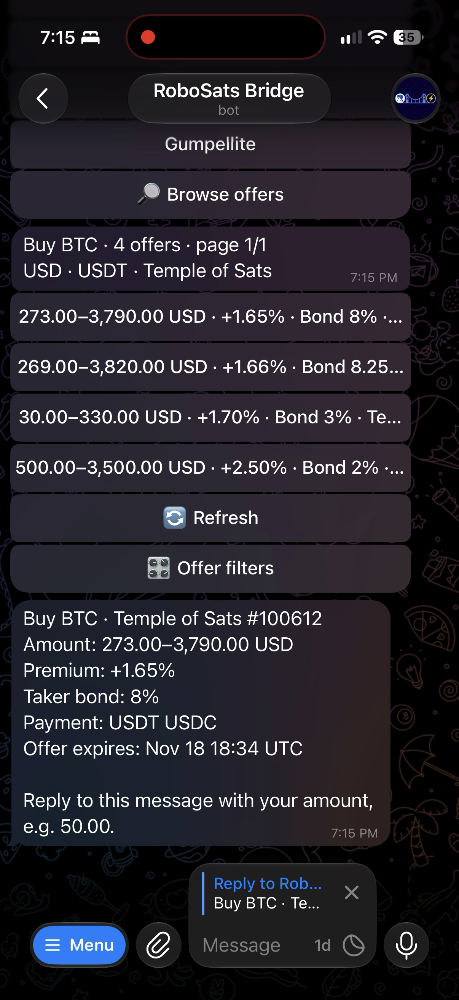
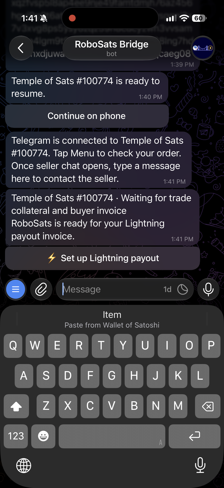
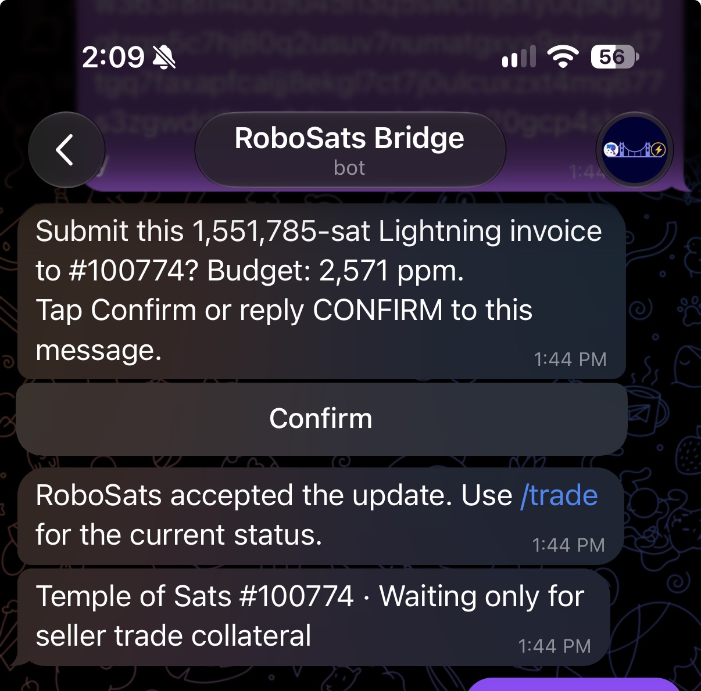
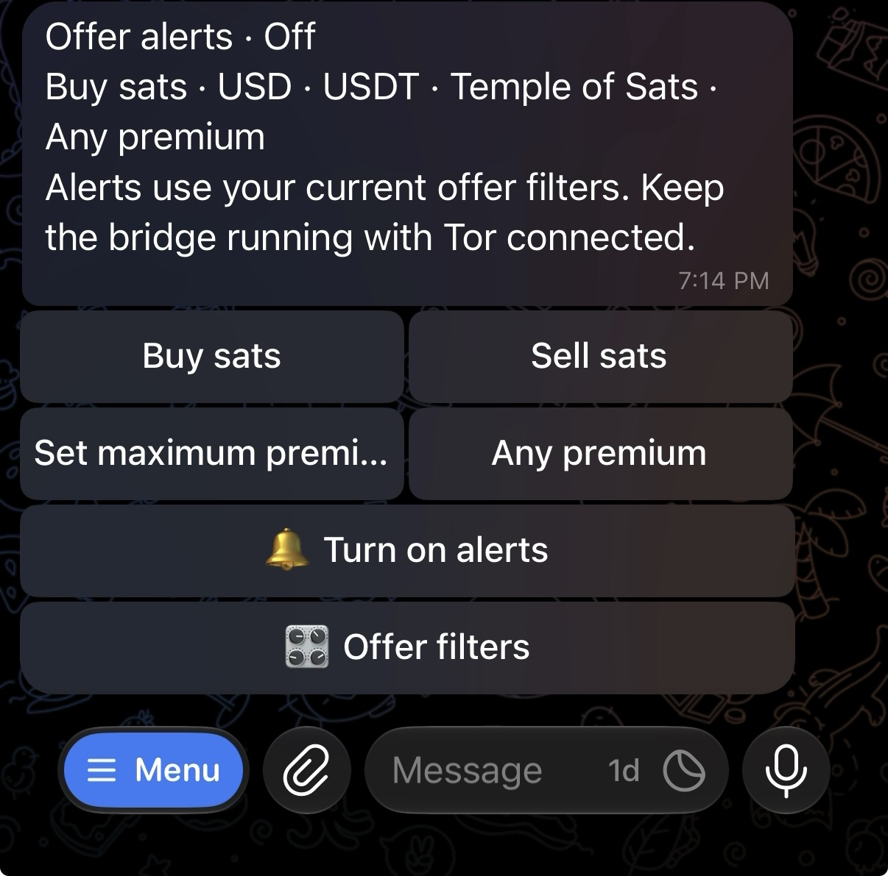

RoboSats Telegram Bridge
Pull request preview · View the proposed change on GitHub

Start the bridge on your computer, then buy sats on RoboSats from your phone. In a bot you own, browse and take an offer, get your Lightning bond invoice, set up your payout, chat with the seller, confirm payment, and follow the trade through payout. Lock the bond and pay the seller using your wallet or payment app on the same phone. You can start a purchase on your phone or pick up one you began on your computer.
Download and install the bridge
- On your Mac or Windows PC, download the ZIP and extract it. Download the bridge ZIP · GitHub project
- Connect to Tor. You can use Tor Browser, a Brave private window with Tor, or a Tor service you already run.
- Open the extracted folder. On Mac, double-click Start RoboSats Bridge.command. On Windows, double-click Start RoboSats Bridge.cmd. On the first run, the launcher sets up the bridge and installs its libraries automatically, then opens the bot setup prompts.
If your computer is missing a required tool or you need help connecting to Tor, see the guide for your computer. macOS setup · Windows setup
Set up your bot once
On your phone, open the verified BotFather chat, tap Start if prompted, then send /newbot. Choose a display name and a username. BotFather gives you a token to paste into the bridge window on your computer. Follow the pairing prompt to connect your bot. This is a one-time setup. You can also pair a dedicated bot you already own. Open BotFather
When the bridge says Bridge ready, it sends buttons to your bot chat. Keep the bridge running, the computer online, and Tor connected. The bridge keeps the computer awake while it runs, so you can lock your screen and continue on your phone. Leave the laptop lid open if closing it puts the computer to sleep. Tap Menu → Show bridge controls to bring the buttons back anytime.

Buy sats from your phone
- Find and take an offer. Open Browse offers or narrow the list under Offer filters. Open an offer, choose a robot if prompted, and review the terms. If the offer shows a range, enter an amount within that range. When you take the offer, the bot gives you the bond invoice. Pay it in your Lightning wallet on the phone, then tap Continue order → Continue on phone.
- Set up your payout. When RoboSats is ready for your invoice, tap Set up Lightning payout. You can adjust the routing budget in sats or parts per million. Create a Lightning invoice in your wallet for the exact amount the bot shows, then submit and confirm it in the bot chat.
- Chat and pay. Once the bot says Seller chat is open, type a normal message to the seller in your bot chat. When the bot says Ready for payment, agree on payment details and use your wallet or payment app on the same phone to send the payment. If you’re paying with a stablecoin, agree on the amount and network in chat. After paying, tap Confirm Sent and finish the confirmation.
- Follow the trade through payout. The bot tells you when RoboSats records your payment confirmation and when the trade completes. Check your Lightning wallet for the payout. Use Menu → Show bridge controls at any point to see the current status and available actions.




Enter your Garage Key on the computer when starting the bridge to use the full purchase flow. You can browse offers and receive alerts without it.
Switch between your computer and phone
If you started a supported buy order in RoboSats on your computer, tap Resume an order in the bot and choose the matching order. To continue a Telegram-started order in RoboSats, open it with the same robot and coordinator and check the current status before taking the next action.
How the bridge connects to RoboSats
The bridge uses the coordinator API for order actions and status. It supports the encrypted Nostr trade chat introduced in RoboSats v0.8.8-alpha and the coordinator’s PGP-encrypted chat. It reads replies over Nostr when both robots’ Nostr keys are available and uses coordinator chat otherwise. It sends your replies over both routes when both are available. RoboSats release notes
Get an offer alert
- Open Offer filters from the buttons the bridge sends at startup. Pick a currency, payment method, and coordinator, or leave any of them open. You can bring the buttons back with Menu → Show bridge controls.
- Open Offer alerts and choose Buy sats or Sell sats. A buy alert looks for sellers at or below your maximum premium. A sell alert looks for buyers at or above your minimum premium. Choose Any premium if you prefer.
- Tap Turn on alerts. When a match arrives, tap View offer to check whether it is still available. Tap Pause alerts whenever you want to stop receiving them.

The bridge checks the public order book about once a minute while browsing. A matching offer can be taken or expire before you open it. Alerts require no Garage Key and resume automatically when the bridge returns to browsing after a trade.
From a buy alert, you can review the offer and enter the purchase flow above. From a sell alert, open the matching buy offer in RoboSats using the Tor link in the alert details.
Privacy
Your computer reads the public RoboSats order book over Tor, matches alerts, and stores your preferences. Because you run your own bridge with your own bot, your setup operates independently of a shared alert bot. Telegram carries the alerts, trade updates, and chat messages you send through the bot. Enter your Garage Key and bot token only in the local setup window. Use RoboSats directly if you want seller messages to stay within RoboSats.
You can help improve this page!
Learn RoboSats is a joint effort of the RoboSats community. If you have used RoboSats before, you are already an expert! Help improve this documentation.
ProTip: You can directly edit this page and open a Pull Request . Your changes will show right here.